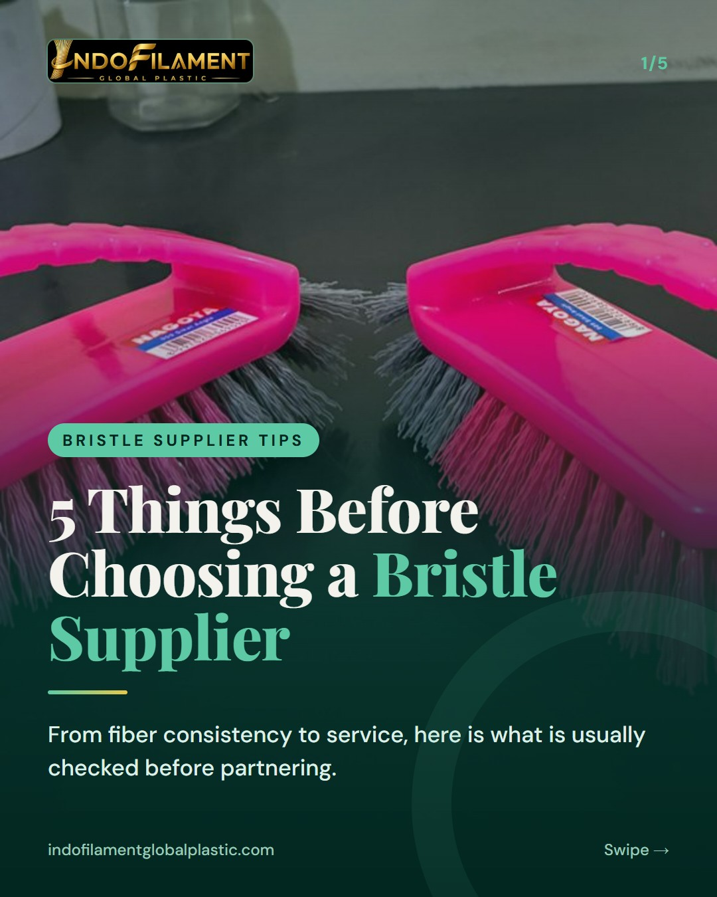
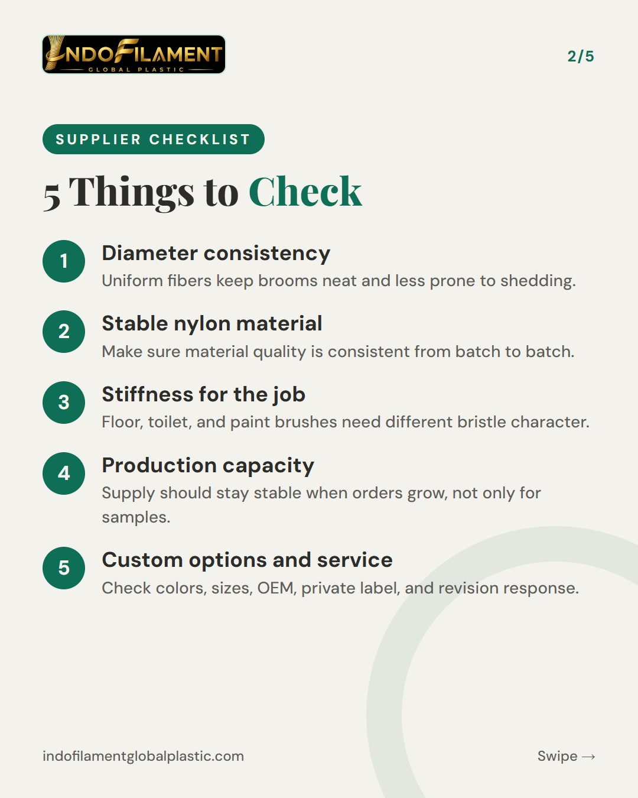
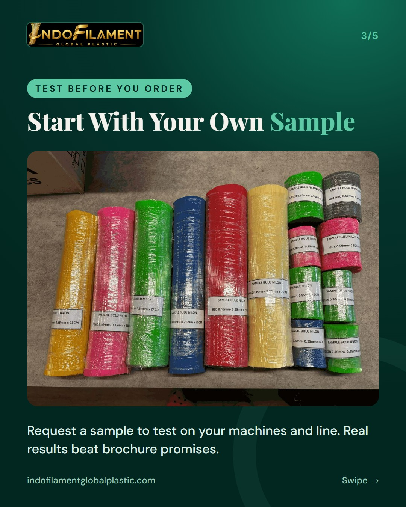
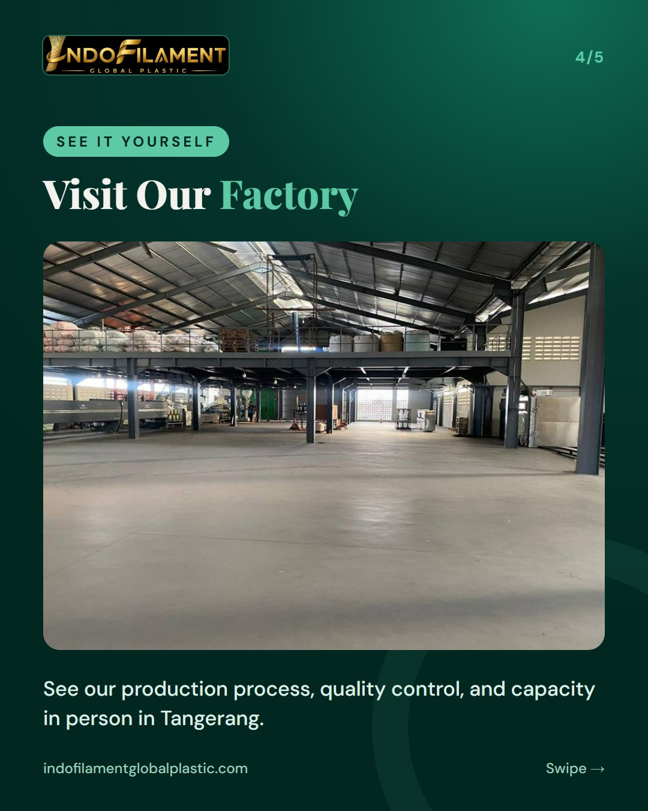
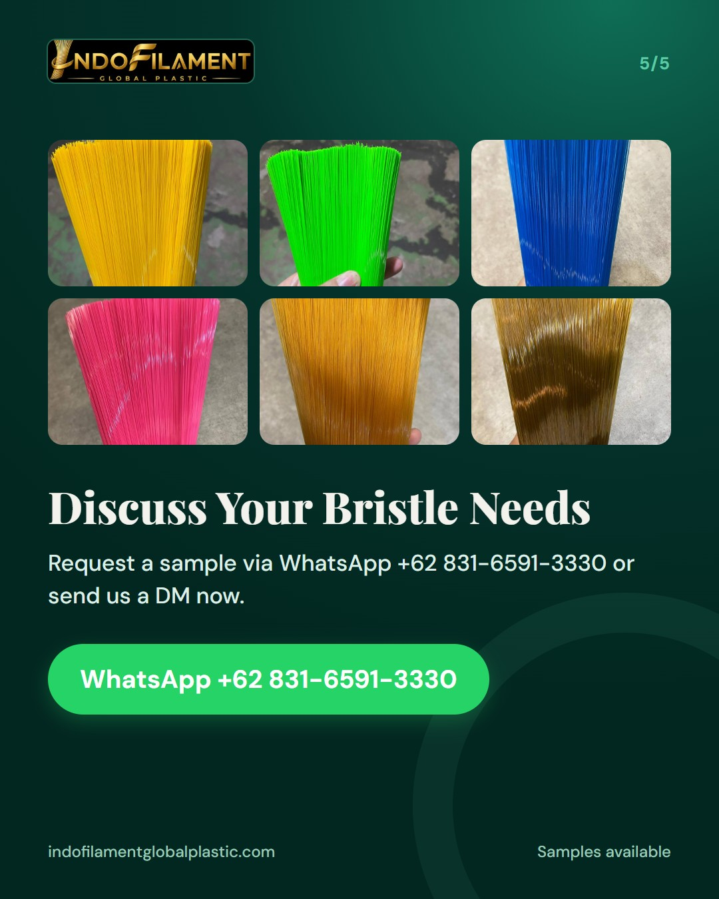

5 things a broom factory checks before choosing a bristle supplier





Before choosing a bristle supplier, a careful broom and brush factory usually has a checklist. Here are 5 things worth checking: 1. Fiber diameter consistency, for neat and durable brooms. 2. Stable nylon quality from batch to batch. 3. Bristle stiffness that suits the function of the final product. 4. Production capacity, so supply stays secure when orders grow. 5. Custom, OEM, and private label options, plus how responsive the team is on revisions. At Indofilament Global Plastic, we produce broom and brush bristles from eco-friendly recycled plastic raw materials. Available in yellow, green, blue, pink, and our Gold Series Bright Gold and Copper Gold. Red, purple, orange, black, white, and custom colors can also be ordered. Want to try first? Request a sample via WhatsApp +62 831-6591-3330 or send us a DM. You can also visit our factory in Tangerang in person. #broomfilament #brushfilament #nylonfilament #bristlesupplier #broommanufacturer #brushmanufacturer #madeinindonesia #privatelabel #OEM #recycledmaterials